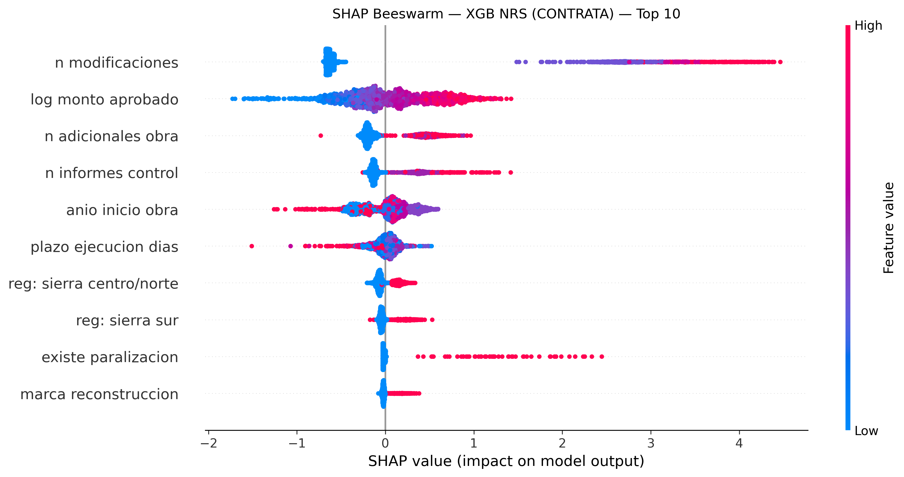
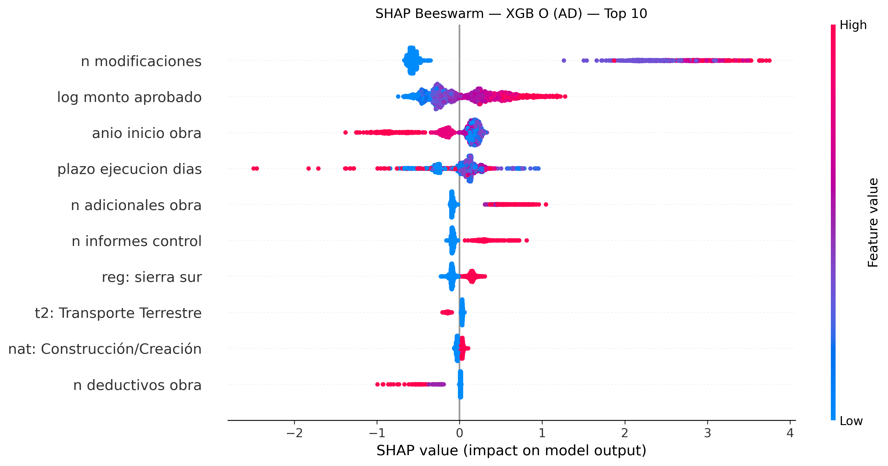
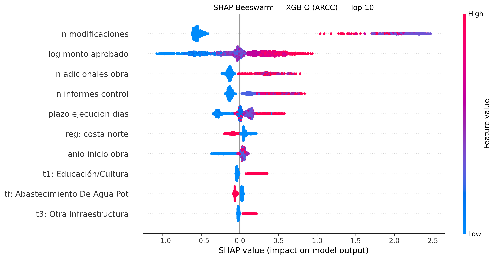
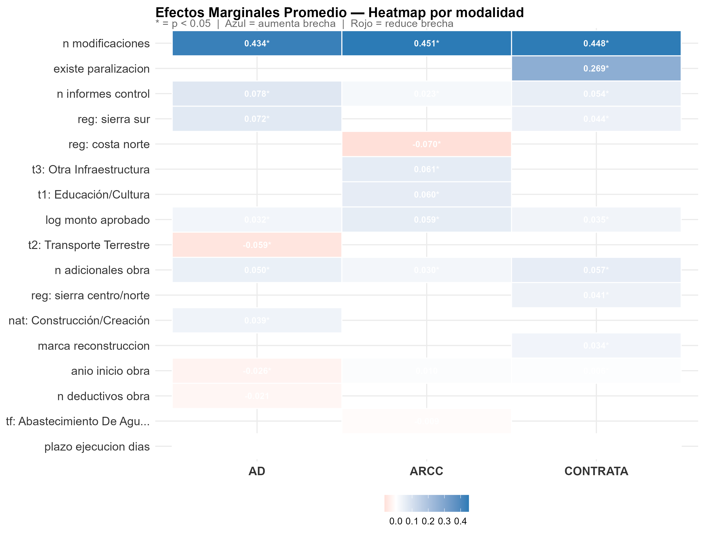
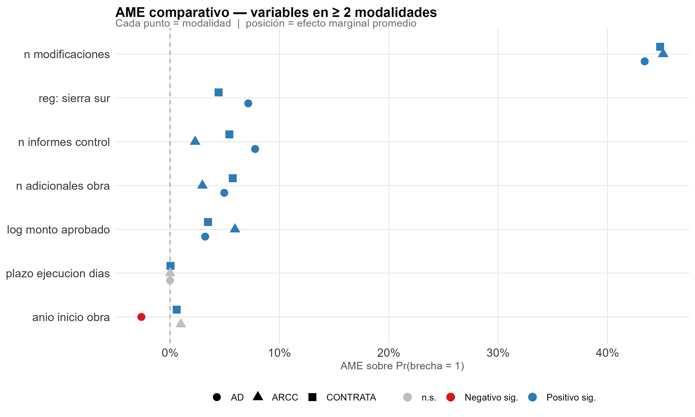
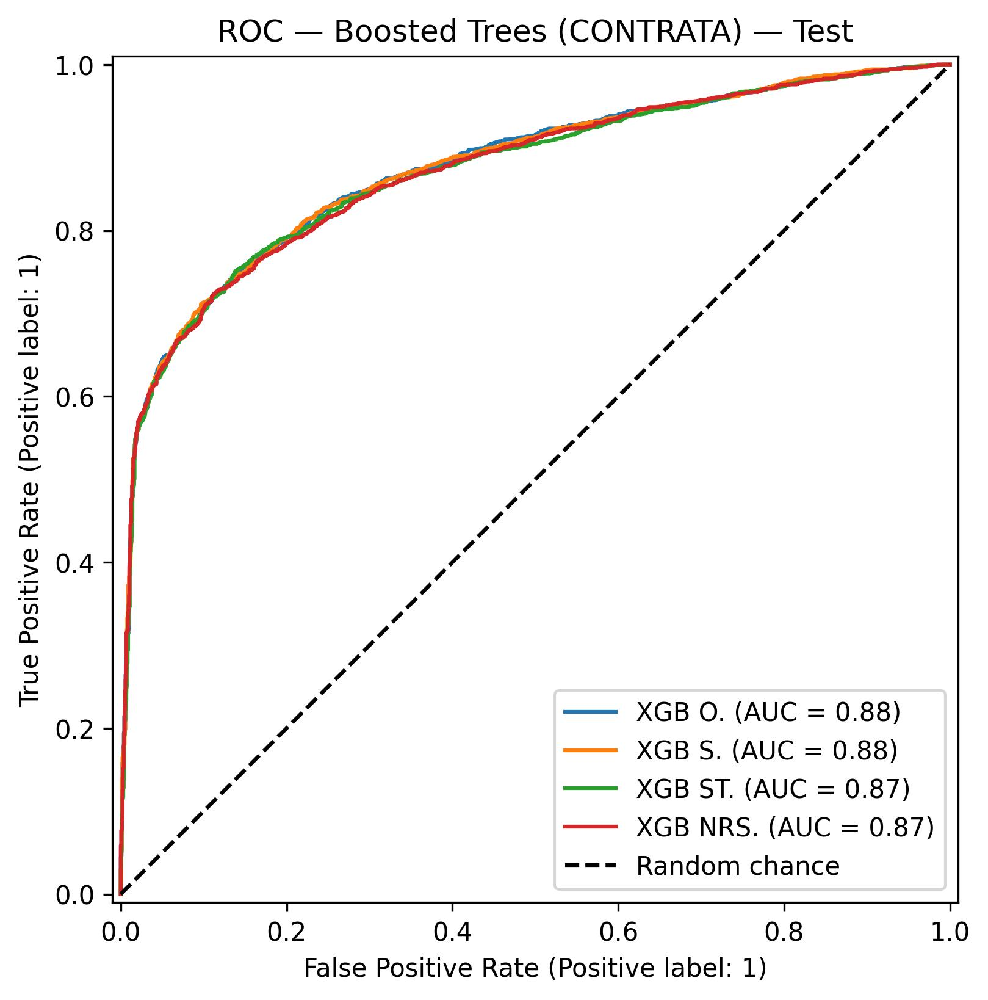
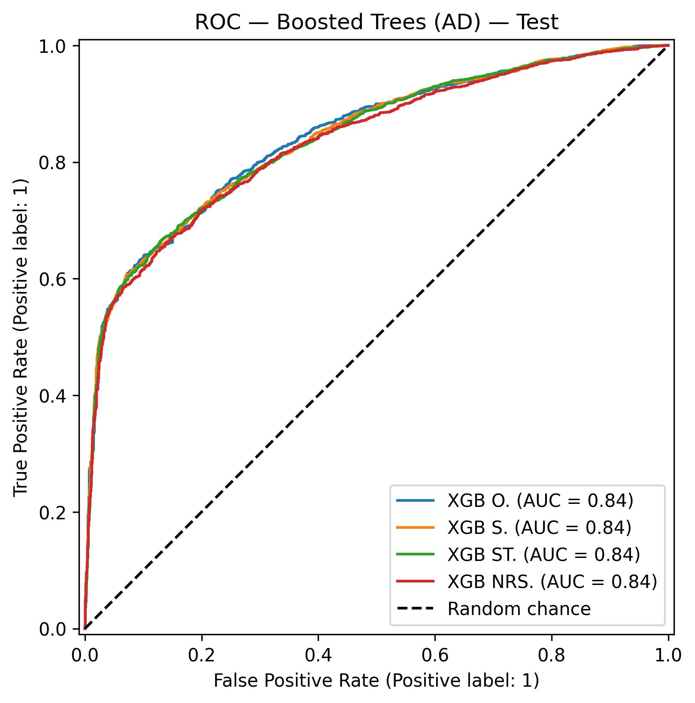
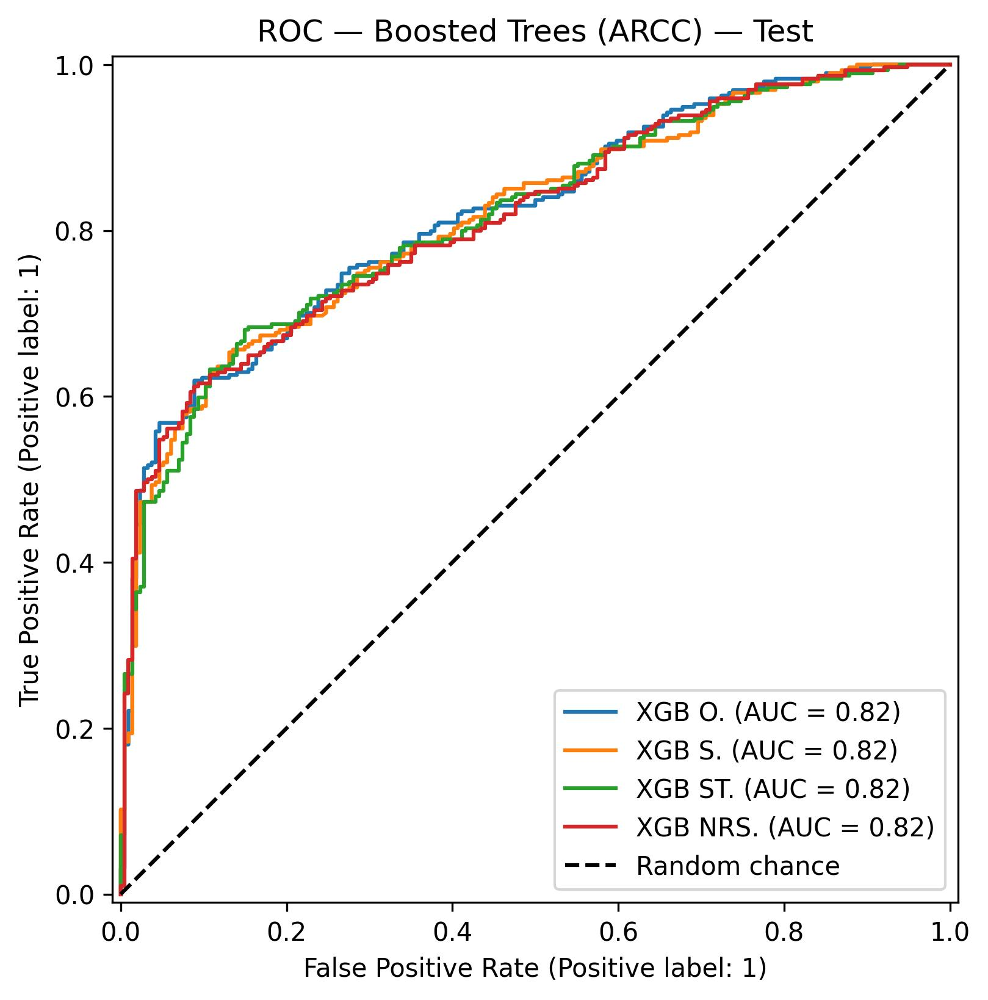

Pipeline de machine learning para predecir si una obra pública peruana terminará después de su fecha programada — e identificar los factores que explican ese retraso.
Métricas sobre el conjunto de test (20% de las observaciones) para el mejor XGBoost por modalidad.
| Modalidad | Sampling | N | Brecha % | AUC-ROC | F1 Score | Accuracy |
|---|---|---|---|---|---|---|
| Contrata | NRS | 20,593 | 53.5% | 0.872 | 0.799 | 79.9% |
| Admin. Directa | Original | 17,111 | 60.6% | 0.845 | 0.754 | 76.2% |
| ARCC | Original | 2,539 | 57.8% | 0.821 | 0.736 | 74.0% |
Efectos marginales promedio (AME) del modelo logit — impacto sobre Pr(brecha = 1).
Selecciona un análisis para explorar los resultados.
Beeswarm plots: cada punto es una observación. El eje X muestra cuánto empuja esa variable la predicción (positivo = más brecha). El color muestra el valor de la variable (rojo = alto, azul = bajo).
CONTRATA — XGB NRS

ADMIN. DIRECTA — XGB O

ARCC — XGB O

Heatmap de efectos marginales promedio del modelo logit. Azul = variable aumenta Pr(brecha). Rojo = reduce. * = p < 0.05.

Variables comunes entre ≥ 2 modalidades:

Curvas ROC del modelo XGBoost sobre el conjunto de test.
CONTRATA (AUC = 0.872)

ADMIN. DIRECTA (AUC = 0.845)

ARCC (AUC = 0.821)

brecha_existenteIngresa las características de una obra y obtén la probabilidad estimada de retraso.
Abrir predictor →